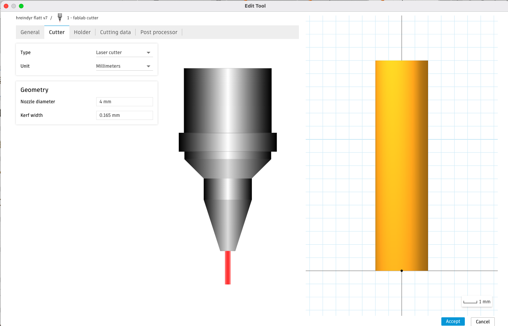

Verkefni 2 - Tölvustuddur skurður
Umfjöllun
Þetta verkefni er í raun þríþætt. Í fyrsta lagi á að skera út límmiða sem annaðhvort er hannaður af mér eða mynd tekinn af netinu. Hægt er að líma límmiðan á tölvu, bíl osfr. Í öðru lagi átti ég að gera svokallað kerf próf, í stuttu máli hvað laserinn er "þykkur" komum að því síðar. Að lokum átti ég að teikna í fusion einhverja hönnun/hlut, skera krossvið með laser í geislaskera og púsla því saman. Fer nánar í hvern og einn lið fyrir sig. Ég vann verkefnið í þessari röð en ég ætla byrja á að kynna flottasta verkefnið fyrst þeas öfug röð. Það er bara skemmtilegra þannig.
Geislaskurður
FormálUm jólin fékk ég rauðvínsglös og rauðvínsflösku í gjöf. Síðan þá er það búið að hanga í skáp í herberginu mínu. Þegar ég var að brainstorma hugmyndir fyrir verkefnið og starði á vínflöskuna að þá skyndilega kom það. Ég ætlaði að teikna rauðvínsstand fyrir vínflöskur sem væri hægt að para með rauðvínsglösunum í flottu matarboði
HugmyndavinnaÉg byrjaði á því að skoða vafra um internetið og skoðaði instagram og pinterest. Upphafleg hafði ég ætlað að gera svona stand sem átti að líkja hangilæri / prosciutto stand. En komst að því í verki að það myndi ekki ganga upp. Síðan datt ég inná svona hunda, hesta, fíla, gíraffa osfr dýra standa. Fannst hreindýra standur helvíti flottur svo það varð fyrir valinu.
FrumgerðÉg byrjaði á því teikna þetta á blaði og síðan að klippa þetta gróft úr bylgjupappa sem ég fékk úr EldumRétt kassa #umhverfisvænn. Þetta gaf mér grófa hugmynd hvernig þetta myndi líta út.


Ég downloadaði Fusion 360 til að teikna og Inkscape fyrir að geta exportað því rétt fyrir geislaskerann. Set ekki link á vefsíðurnar því það gæti verið úreltir linkar í framtíðinni
TeikningarHérna er það bara að dunda sér við að teikna, forritið er fljótlært og ef ég var strand að þá voru helling af tutorials á youtube.
Fætur sketch og extrudaðar. Duplicataði bara þennan file til að fá fram og afturlappir.
Búkur sketch og extrudað
Horn sketch og extrudað
Vínflaska sketch og extrudað. Ég mældi vínflöskurnar heima og skoðaði staðla á netinu til að passa uppá það ég væri aldrei með of stóra flösku sem passaði ekki.
Ef þú ert að breyta/tweaka einhverjum stærðum reglulega sem koma oft fyrir að þá er sniðugt að búa til parametra. Segjum sem svo að þú ætlir að teikna tening, 6x hliðar -> 12x línur sem mynda kassan. Segjum sem svo að þú hafir upprunulega sett stærðina á öllum línunum 3cm en núna viltu minnka það í 2cm. Í stað þess að smella á hverja einustu línu og breyta stærðina að þá gætiru frekar skýrt línurnar "linustaerd teningur" farið í parametra settings og breytt "línustaerd teningur" (2cm). Þá breytast allar línurnar í einu þegar þú breytir stærðinni. Parametrar eiga ekkert alltaf erindi en getur verið gott tól til að spara þér mikinn tíma. Ég notaði parametra til að sjá betur stærðir á samskeytum en ekki þegar ég teiknaði freeform eins og til dæmis hornin á hreindýrinu. Erfitt að útskýra þetta eitthvað betur í orðum en annars er google alltaf vinur þinn.
Dæmi um parametra sem ég notaði á fæturnar og búkinn
Hérna bjó til new design og fór að púsla öllu saman. Ég teiknaði ekki neitt hér heldur einfaldlega hægri smellti á íhlutina á vinstri hönd og valdi "insert into current design. Síðan undir assemble -> joint fór ég að púsla öllu saman. Núna reynir á tölvuteikningarhæfileikana síðan á fyrsta ári að púsla saman. Útkoman var frábær og gaf mér góða hugmynd á hversu stórt þetta yrði í raunveruleikanum því ég teiknaði vínflöskuna m.v. raunverulega stærð
Design new manufacture
Hérna þurfti ég að gera aftur það sama og í samsetningar hlutanum nema hvað í þetta skipti stillti ég öllu snyrtilega og lárétt á flötinn. Eins og sjá má á myndinni.
Búa til setup
Hér ferðu í setup flippann og velur alla hlutina sem þú ætlar að skera. Ef allt er grænt þá er það vænt.
Búa til drill
Hér segi ég forritinu hvað það eigi að gera ráð fyrir miklu kerfi í laserskerarnum. Velur cutting flippann og stillir kerf width. Ég byrjaði upprunalega með 0.11mm en endaði á því að stækka það í 0.165mm. Meira um kerf neðar á síðunni undir "Kerf próf".

Setup NC programÞví næst ýtti ég á setup og new NC program. Vista og bamm
Inkscape.
Núna vistaðist skráinn sem dxf file í tölvunni. Ég opnaði það í Inkscape stillti það af og exportaði sem SVG file á usb lykil sem ég opnaði síðan tölvunni tengda við laserskerarann. Control P og passa eftirfarandi stillingar fyrir krossvið

Fyrsta tilraun var fail. Ég hafði gert ráð fyrir að kerfið væri 0.11mm. Þetta smellpassaði en var ekki þétt þannig ef ég lyfti því upp þá datt það í sundur. Þá fór ég að reikna betur og stillti kerfið í drillinum í næstu tilraun sem 0.165mm.
Seinni tilraun næstum success. Aftur lappirnar SMELLPÖSSUÐU saman en fremri lappirnir og hornið var laust. Ég var svo pottþéttur á því að ég hafi reiknað þetta rétt. Þá komst ég að því efnisþykktin á plötunni sjálfri er mismunandi yfir efnið. Einhverjir nokkrir millimetrar 4.05mm eða 3.95mm en það skipti máli. Þá var ekkert annað í stöðunni en að líma samskeytin sem voru tæp.


Hreindýra - vínstandur
Þegar ég kom heim var það fyrsta sem ég gerði að skella rauðvínsflösku á hreindýrin og taka myndir. Ég er himinlifandi með útkomuna og ég veit að þetta mun slá í gegn í næsta matarboði
Smelltu á play og njóttu

Vínylskurður
Skref 1Ég byrjaði á því að downloada forritinu Inkscape og finna einhverja flotta mynd á netinu. Mæli með hérna að hafa myndina einfalda því annars flækiru fyrir þér "in the long run"
Skref 2Hérna er ég bara að fikta í brush tool, stroke paint stillingum. Fer ekki út í smáu atriðin hérna. En passa að hafa stroke style width í 0.02mm svo að vínylskerarinn hafi einhverja almennilega þykkt til að skera úr. Setur fileinn á tölvuna tengda skerararnum og bamm þetta er komið.
Útkoman


Kerf próf
Í stuttu máli er hægt að ímynda sér kerf svona eins og muninn að skera a4 blað með dúkahníf eða sverði. Sverðið er talsvert meira um sig um rífur meira efni heldur en dúkahnífurinn. Hérna er verið að pæla í því hvað kerfið er á lasernum sjálfum svo hægt sé að gera ráð fyrir honum í hönnunnni á hlutnum. Þá tryggiru það að öll samskeyti SMELLPASSA saman.
Skref 1Þessi mynd segir meira en þúsund orð
En til að útskýra þetta örsnöggt að þá er teiknaður einfaldur kassi með 10x línum og síðan þegar það kemur úr laservélinni að þá er spítunum skellt saman og bilið sem myndast er mælt og reiknað. Þvermálið á lasernum er 0.22mm og því radíusinn 0.11mm
Þessi mynd gefur auga leið.

Tímaskráning
| Hvað var gert | Tími |
|---|---|
| Hugmyndavinna | 1 klst |
| Frumgerð úr pappa | 2 klst |
| Fusion teikningar | 6 klst |
| Geislaskeri og samsetning | 2 klst |
| Vínyl skurður | 1 klst |
| Kerf próf | 0.5 klst |
| Vefsíðu skráning | 7 klst |
| Samtals | 19.5 klst |